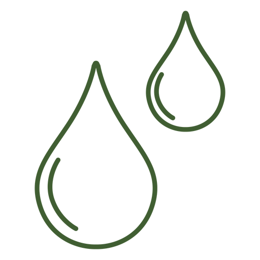
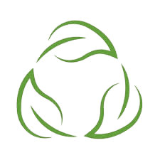
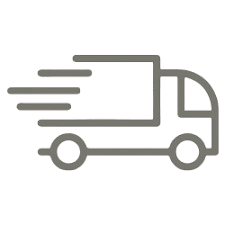

La bebida que devuelve a la tierra lo que toma de ellas
No solo reciclamos. Cada fase de nuestro proceso esta diseñada para cuidar el planeta

Avena cultivada con agua de lluvia natural, sin sistemas de riego artificicales. Ahorramos el 90% del agua
Procesamientos con energia 100% renovable.Placas solares alimentan toda nuestra produccion

Botellas de vidrio retornable con sistemas SDDR. Cero plasticos, impacto infinito

Logistica electrica de cercania. Reducimos emisiones con distribucion local
Ahorra de agua vs lacteos.
Energia renovable
Plasticos de un solo uso
"Kilometro cero, impacto cero"
Nuestro compromiso con los Objetivos de Desarrollo Sostenible de la ONU
Nivel de Incidencia
Acción Clave
Ahorro del 90% de agua mediante cultivo de secano.
Nivel de Incidencia
Acción Clave
Eliminación total de plásticos mediante sistema SDDR.
Nivel de Incidencia
Acción Clave
Huella de carbono neutro (Renovables + Logística Eléctrica).
Nivel de Incidencia
Acción Clave
Alimento nutritivo de origen vegetal.
Nivel de Incidencia
Acción Clave
Procesado con tecnología verde y renovable.
IMPACTO TOTAL
Contribuyendo activamente a la Agenda 2030
"Avena de secano, cultivada por la lluvia, no por motores"
Descubre cuánta agua y CO₂ has ahorrado al cambiar a AvenaVital
Agua ahorrada: L
CO₂ reducido: kg
Devuelve tus botellas de vidrio y contribuye al ciclo sostenible
Calle Mayor, 45
L-S: 9:00 - 21:00
Plaza del Mercado, 12
L-V: 8:30 - 14:30
Av. Libertad, 88
L-S: 10:00 - 22:00
C. Innovación, s/n
L-V: 9:00 - 18:00
Sistema de Depósito, Devolución y Retorno. Por cada botella devuelta, recibes un incentivo y contribuyes a cerrar el ciclo de economía circular.
Cero residuos, impacto infinito.
"No solo reciclamos, reutilizamos"